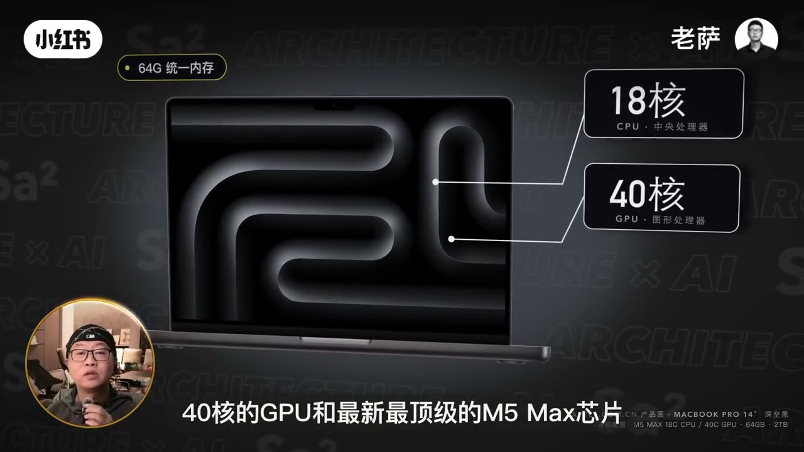
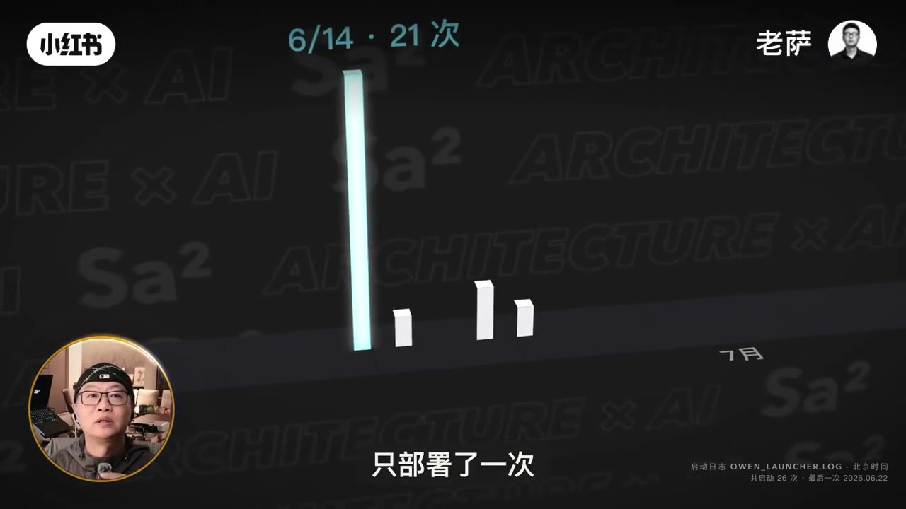
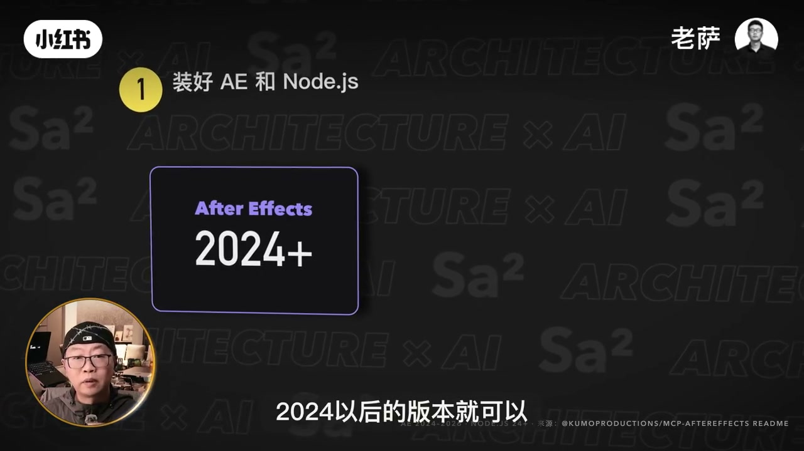
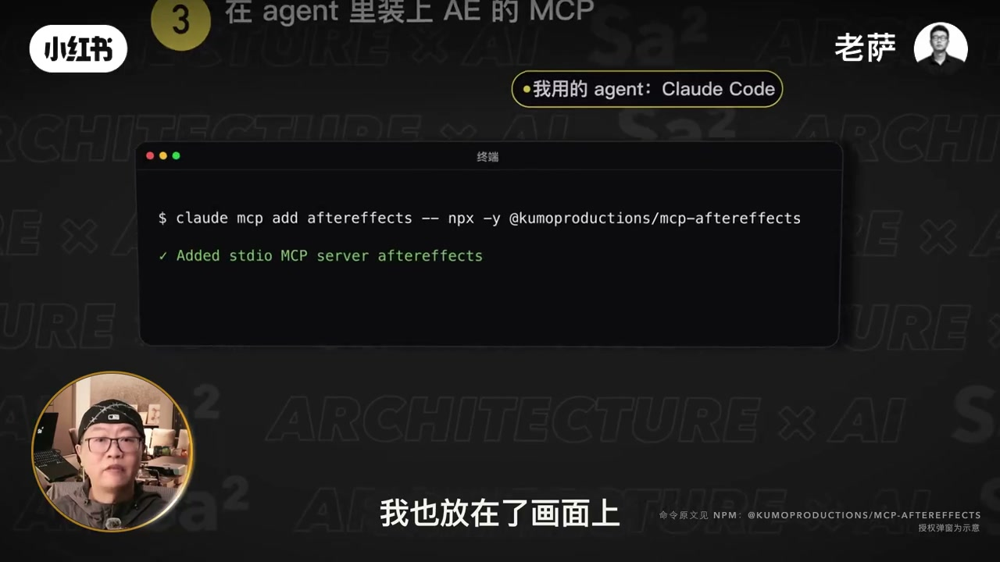
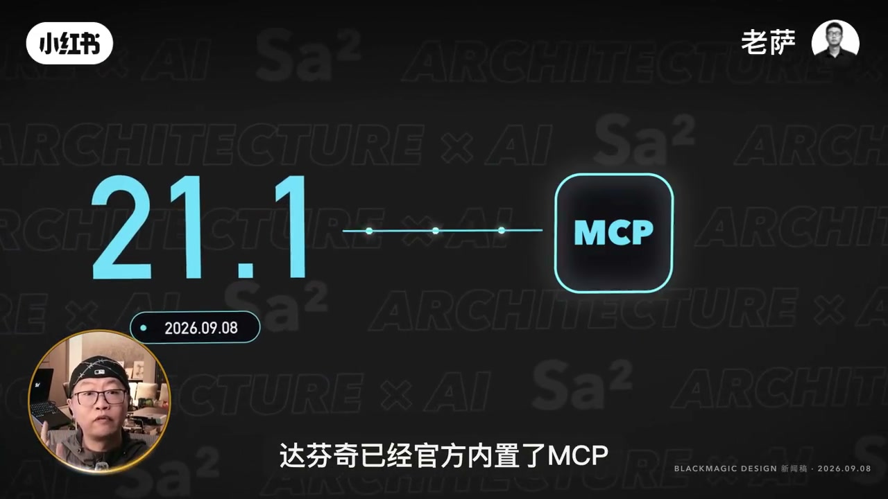
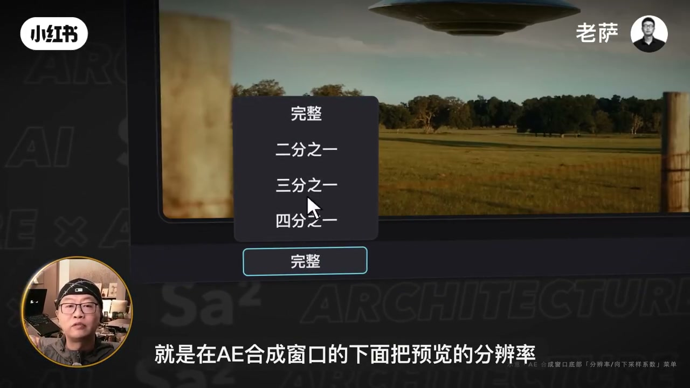
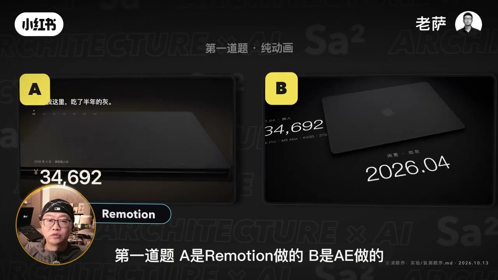

内容要点
笔记标题写的是 Opus 5.5、AE 和达芬奇。Whisper 把这颗模型听成 OPS、Obs，还多听出一个 5.5.5；芯片听成 MMAX；Tripo 听成 Triple；分辨率听成「分圆率」。下面章节里的专名按画面硬字幕校正，转录区保留分段，只把繁体转成简体。
知识结构
开场口播只说到 64G 统一内存。画面补上 14 寸、M5 Max、18 核 CPU、40 核 GPU 和 2TB，并排出 4 月成交价 34692 元和 10 月 13 日官网 41499 元。启动日志写着一共开过 26 次，最后一次是 2026 年 6 月 22 日。
01:00 有一句「可以接入 MCP」，然后又断到 03:31。中间画面按步骤写出：After Effects 2024 及以后、Node.js、勾上允许脚本写入文件和访问网络、在 Claude Code 里执行 claude mcp add aftereffects。包名是 @kumoproductions/mcp-aftereffects。
口播把工作流收成达芬奇加 AE 加 Opus 5.5。外部用 AI 操作达芬奇，他说一直只有 Studio 能支持。21.1 以后官方内置 MCP；更早版本则把外部脚本改成本地，再装第三方 MCP。画面右下角的 Blackmagic 新闻稿日期是 2026.09.08，和口播说的「6 月份」不是同一天。
顺序是达芬奇调色，然后 AE 做动效，剪辑也在 AE 里完成。他认为表现力强很多，效率却不一定超过自己原来的做法，而且很吃机器。预览卡的时候，合成窗口底部可以把分辨率从完整降下来，导出画质不受这一档影响。
他加上 Blender，以及画面上的 Tripo。第一题揭晓 A 是 Remotion、B 是 AE。Remotion 被他说成擅长纯动画、卡片、文字和图表；AE 擅长让动效贴住真实素材，模型操作次数大约是 Remotion 的两倍。收束句是：高配电脑更适合拿来跑这些专业软件。
能跟着做的部分是：达芬奇用 Studio，21.1 走官方 AI 助手，更早版本开本地外部脚本；AE 侧按画面命令装 kumoproductions 的 MCP，并允许脚本访问网络。效率对比和「操作次数两倍」是他的感受，画面自己标了示意。
00:00–01:00
64G 统一内存只是口播的第一句
左下角圆窗里，老萨戴黑帽和眼镜。00:00 到 00:03 他只说了两句：这是一台 MacBook Pro，它拥有 64G 的统一内存。Whisper 把「拥有」听成「拥用有」。字幕和右侧标注比这两句具体得多。

大约 00:12，画面切到一则英文网页，版头日期能读出 2026 年 6 月 25 日，标题大意是苹果上调了 Mac 和 iPad 的价格。00:18 再切到苹果中国官网的购买页，字幕写「现在官网要 41,499」。左边黑卡片写「4 月 · 我的成交价」，数字是 34692 元，日期 2026.04。右下角细字把配置钉死为 14 寸、M5 Max、18 核 CPU、40 核 GPU、64GB、2TB，并注明成交价来自他 4 月的订单。两个价格都是画面上的字，笔记没有另去核对他的订单。
00:30 口播才接上：「后来就再也没怎么用过」。这一句之前有二十多秒没有转录。画面是一根很高的柱子，标注 6 月 14 日，旁边几根很矮，地上写着 7 月。右下角是启动日志 QWEN_LAUNCHER.LOG，北京时间，共启动 26 次，最后一次 2026.06.22。同一帧的大字幕是「只部署了一次」。26 次和「一次」同时出现，视频没有解释这个日志统计的是开机还是某一次部署，这里只记下画面上的两行字。

01:00–03:31
AE 怎么接上，几乎全靠画面
00:32 到 01:00、01:16 到 03:31，转录要么是一串逗号，要么整段空着。01:00 到 01:16 只有一句：可以接入 MCP 了，也就是说我们可以让它直接去操作。这句里的模型名被听成 OPS5.5.5，多出来的一个 5 没有出现在标题和画面上，正文按标题写成 Opus 5.5。
空档里的画面先放了一份提示词.txt。题目是做一台连锁机关，最后敲响一口钟。规则写着要用物理引擎真算、一镜到底不许剪切、碰撞要踩在鼓点上、音效怎么加由模型判断。旁边的机关是示意图。字幕说以前这些是用 Remotion 加上 AI 做的。这份提示词是他给模型的题，不是本片在教怎么搭机关。
接着画面进入 AE 的接入步骤，口播没有把这三步念出来。

01:36 前后，步骤 2 打开「首选项，脚本和表达式」。勾选的是「允许脚本写入文件和访问网络」。红字写着不勾的话 AI 连不上 After Effects。字幕也说，不这样设置，AI 没有办法去操作 AE。细字注明界面按 AE 2025 中文版示意。

步骤 3 的标题是「在 agent 里装上 AE 的 MCP」，黄框写「我用的 agent: Claude Code」。命令是 claude mcp add aftereffects，后面接 npx -y @kumoproductions/mcp-aftereffects。终端回了 Added stdio MCP server aftereffects。下一帧出现系统询问是否允许终端控制 Adobe After Effects 2025。右下角写命令原文见这个 npm 包。这些是画面上的安装步骤，口播没有逐条复述。
02:12 左右画面打出 Remotion 对 AE，字幕在问它和 Remotion 到底差在哪里。回答要等到片尾才说完。
03:31–04:42
口播回来之后，先把达芬奇说成调色软件
03:31 他指着前面那些成片说，这些都是 Opus 5.5 做出来的。所以他觉得现在做口播、做 MV，甚至做电影的剪辑，可能最好的一种方式，就是开头说的那套：达芬奇加上 AE，再加上 Opus 5.5。Whisper 把「口播」听成「口婆」。
达芬奇是一款靠调色体系的剪辑软件。很多电影的调色都是用它来做的。它分为免费版和付费的 Studio 版。
「很多电影的调色都用它」是他的说法，片子里没有列出片单。他马上转到怎么接 AI，前提是一定要用 Studio 版，因为从外面用 AI 去操作达芬奇，一直以来都只有 Studio 版才可以支持。这句话的范围是「外部 AI 操作」，不是说免费版不能调色。

口播说，从 6 月份的 21.1 版本以后，达芬奇已经官方内置了 MCP，公告里还点名支持了他们现在用的这个 Agent。Agent 的名字在这几句里没有被念出来。画面上的新闻稿日期是 2026 年 9 月 8 日，和「6 月份」对不上。笔记不改他的口播，也不把 9 月 8 日写成已经核对过的 Blackmagic 原文。
他说接起来是三步。第一步，把达芬奇 Studio 升级到 21.1 以后。第二步，在达芬奇里面打开 AI 助手的设置，它会自动把连接接好。第三步，回到 Agent 里，直接让它帮你调色。
如果用的是更早的版本，他给了另一条路：在偏好设置里把外部脚本使用改成本地，再装一个第三方 MCP，一样可以接入。04:40 前后画面打开一个 GitHub 仓库，页头能读出 davinci-resolve-mcp，简介写的是给 DaVinci Resolve Studio 用的 MCP server。这是画面上的第三方入口，口播没有念仓库名。
04:42–05:52
整套顺序，以及预览卡的时候降哪一档
04:42 他开始讲自己现在的整套顺序：先用达芬奇调色，这一步已经让 AI 接上达芬奇；然后再交给 AE，由 Opus 5.5 做动效；所有的剪辑都在 AE 里面完成。转录把 Opus 听成 Obs5.5。
他接着说了一句实话：这套工作流的效率不一定比他原来的工作高，但是表现力他觉得强了非常多。代价是非常吃机器。达芬奇调色吃显卡，AE 的预览和渲染吃 CPU 和内存。那台吃灰半年的电脑，到这里才第一次真正把性能用出来。
芯片这句，口播听起来像 MMAX。开场画面写的是 M5 Max，这里按画面记。他说因为是这颗芯片，所以在 AE 里做实时预览不卡顿，而且每次导出都是 4K。这是他这台机器上的体验，不是对所有 M5 Max 的测试结果。
如果电脑没那么好、预览很卡，他把技巧放在 AE 合成窗口下面：把预览分辨率从完整调低。Whisper 把「分辨率」听成「分圆率」，档位重复听成「1 分 1」。05:36 的菜单是清楚的。

他的结论是：这样预览会流畅很多，而且不会影响最后导出的画质。菜单同时列出二分之一、三分之一和四分之一，这一帧的光标停在三分之一，他没有在口播里把三档各说一遍。05:00 前后还放过一张效率对比：左边「我的工作台」的条更长，右边「AE 工作流」更短，小字写着「示意 · 我的主观感受」，条长不要当成测量值。
05:52–07:01
Tripo、盲测，以及高配电脑用来干什么
他说不只是剪辑，现在也在用 Blender 做 3D。包括现在比较火的 Tripo，可以直接生成 3D 模型，再放到 Blender 里面渲染。Whisper 把 Tripo 听成 Triple。05:50 的画面是 Tripo 的灰模，英文字样写着较差的拓扑会妨碍动画，右下角注明 Tripo AI 官方影片和 Blender 开放电影。这些模型也要靠这台机器的性能。
所以他觉得以后一条视频的完整工作流可能是：达芬奇来调色，AE 来做动效和剪辑，再加上 3D 软件。AI 把这几个专业软件串起来。这不一定是唯一的答案，但他觉得可能是以后的一个方向。口播把「达芬奇」又听成了「达分期」。
06:16 他揭晓谜底。第一道题，A 是 Remotion 做的，B 是 AE 做的。第二题反过来。画面顶上写着「第一道题 · 纯动画」，两格都是那台电脑的价格动画，右下角写盲测顺序文件，日期 2026.10.13。

分工他说得很明确。Remotion 擅长纯动画、卡片、文字和图表。AE 擅长处理真实素材，让动效和画面融在一起。AE 的成本也会更高，模型操作的次数差不多是 Remotion 的两倍。「差不多两倍」没有对照表，只当他的经验。
片尾回到那台吃了半年灰的电脑：到现在才真正发挥作用。他认为这些高配电脑真正的用法，不一定是拿来训练模型或者做本地部署，而是让人更容易用好更专业的软件。最后问观众：你的电脑现在是干活，还是在吃灰，可以在评论区告诉他。视频没有给出评论区的回答。